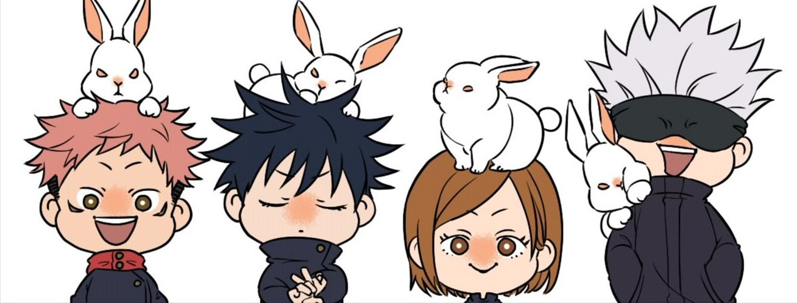
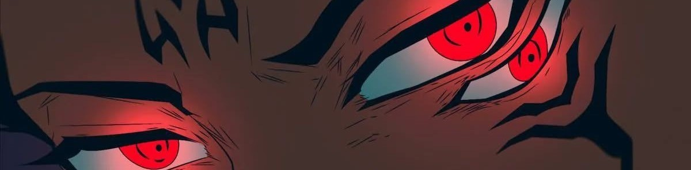
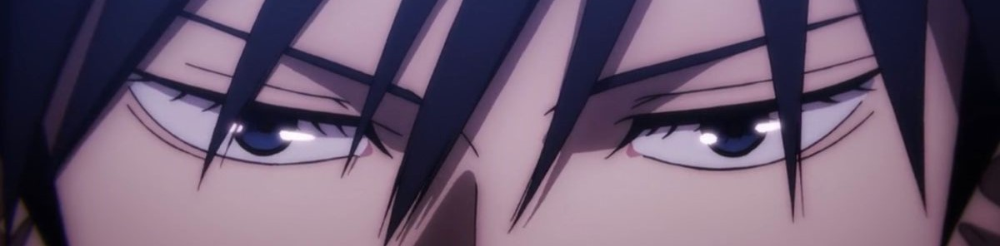
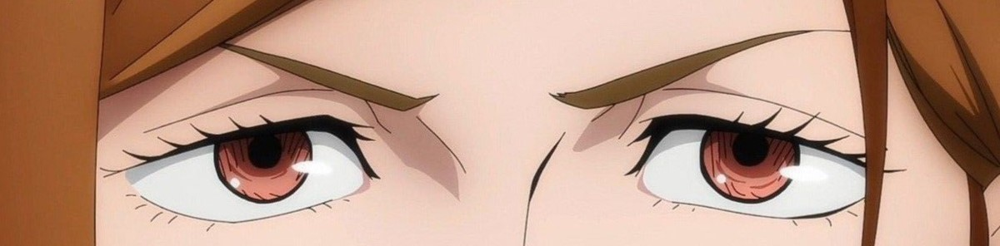
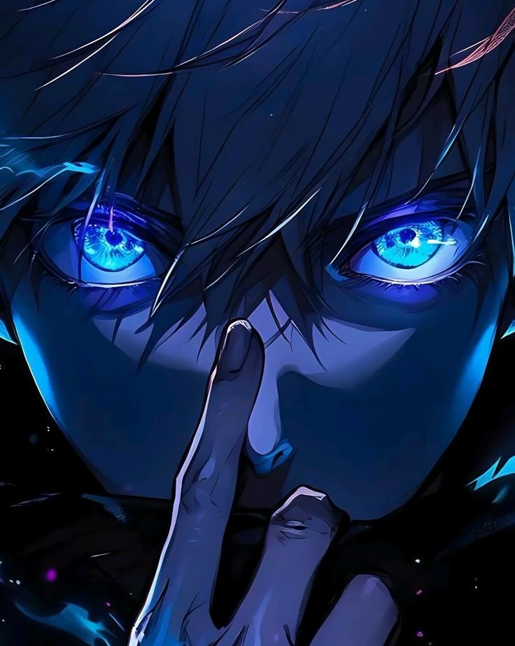

|  | ||
|  |  |  |
| 27254C

|
Gojo Satoru adalah penyihir jujutsu yang sangat kuat dan diakui sebagai yang terkuat di era modern. Sejak kecil, ia sudah menjadi perbincangan di kalangan penyihir jujutsu karena merupakan pewaris terakhir dan satu-satunya dari klan Gojo yang mewarisi kekuatan Six Eyes. Secara fisik, ia digambarkan sebagai pria tinggi dengan rambut putih dan mata biru cerah yang sering ditutupi kain atau kacamata hitam. Penampilan sehari-harinya trendi dan sering mengenakan pakaian serba hitam.Gojo Satoru tidak hanya unggul dalam kekuatan, tetapi juga cerdik dan strategis. Ia mahir dalam pertempuran tangan kosong dan menggunakan teknik kutukan tingkat tinggi, termasuk Domain Expansion bernama Muryokushou Unlimited Void dan Reverse Cursed Technique untuk regenerasi. Meskipun angkuh di mata musuh, ia sangat peduli pada murid-muridnya dan dapat menunjukkan sisi emosional, seperti saat ia gagal menyelamatkan Riko Amanai. Di sisi lain, ia juga ambisius dan berdarah dingin terhadap musuh-musuhnya.Terlepas dari kekuatannya, Gojo Satoru juga memiliki sisi "manusiawi" yang unik. Ia sangat menyukai makanan manis, bahkan menjadi penggemar berat makanan manis. Ia tidak suka alkohol, dan ia adalah penggemar Digimon. Menurut penciptanya, Gege Akutami, lagu Mada Minu Asu Ni dari Asian Kung-Fu Generation dan Shame on Me dari Avicii adalah lagu tema Gojo Satoru. |
|
|
© 2025 Viter Moldy Kesuma. |
||